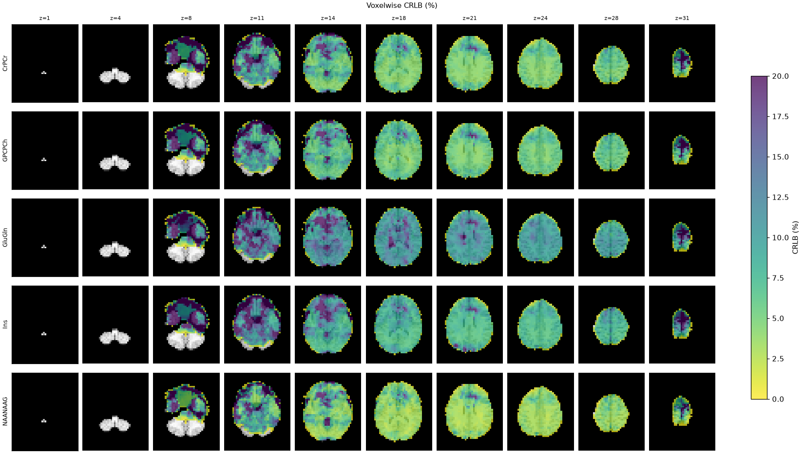
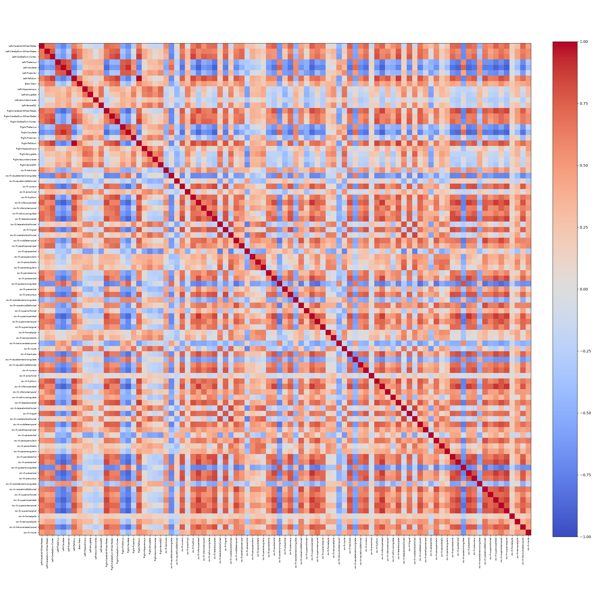

Not computed: T1w-space leakage requires the full T1w-space resampled metabolite maps (--output-mrsi-t1w), which weren't requested for this run. The alignment image above uses a separate, lightweight report-only resampling and doesn't imply this data is available.
Template-space alignment
Template-space alignment
Reference metabolite map (CrPCr) overlaid on the full-head MNI152NLin2009cAsym template at 5 mm, with the white-matter boundary in green. Hover over the figure to flip between the two.
Parcelwise CRLB quality (green reliable / red unreliable)

qc_valid_fraction is the fraction of a parcel's MRSI voxels that passed every per-voxel quality threshold in force for this run (CRLB ≤ 20.0%, SNR ≥ 4.0, linewidth ≤ 0.1), averaged over metabolites. Rows are ordered worst first.
parcel_id
parcel_name
hemisphere
mean_crlb
qc_valid_fraction
1006
ctx-lh-entorhinal
L
112.650
0.150
46
Right-Cerebellum-White-Matter
R
22.233
0.270
18
Left-Amygdala
L
21.673
0.273
1032
ctx-lh-frontalpole
L
161.900
0.289
2006
ctx-rh-entorhinal
R
41.380
0.300
2032
ctx-rh-frontalpole
R
317.525
0.311
7
Left-Cerebellum-White-Matter
L
13.242
0.329
1033
ctx-lh-temporalpole
L
101.237
0.388
47
Right-Cerebellum-Cortex
R
29.372
0.405
1009
ctx-lh-inferiortemporal
L
37.039
0.422
8
Left-Cerebellum-Cortex
L
16.590
0.437
2033
ctx-rh-temporalpole
R
122.071
0.486
16
Brain-Stem
NaN
16.152
0.551
2019
ctx-rh-parsorbitalis
R
41.533
0.560
26
Left-Accumbens-area
L
94.300
0.567
1011
ctx-lh-lateraloccipital
L
8.468
0.578
1027
ctx-lh-rostralmiddlefrontal
L
8.896
0.639
2027
ctx-rh-rostralmiddlefrontal
R
24.775
0.690
2009
ctx-rh-inferiortemporal
R
42.380
0.705
1015
ctx-lh-middletemporal
L
21.457
0.705
2011
ctx-rh-lateraloccipital
R
7.613
0.731
58
Right-Accumbens-area
R
17.200
0.733
1007
ctx-lh-fusiform
L
33.067
0.756
2012
ctx-rh-lateralorbitofrontal
R
27.377
0.765
2002
ctx-rh-caudalanteriorcingulate
R
14.181
0.790
1012
ctx-lh-lateralorbitofrontal
L
23.344
0.808
1019
ctx-lh-parsorbitalis
L
11.787
0.812
1031
ctx-lh-supramarginal
L
6.535
0.816
17
Left-Hippocampus
L
12.923
0.838
1022
ctx-lh-postcentral
L
6.697
0.857
1028
ctx-lh-superiorfrontal
L
7.874
0.858
60
Right-VentralDC
R
10.807
0.869
1016
ctx-lh-parahippocampal
L
12.118
0.871
1003
ctx-lh-caudalmiddlefrontal
L
6.991
0.880
1002
ctx-lh-caudalanteriorcingulate
L
11.558
0.883
2014
ctx-rh-medialorbitofrontal
R
15.297
0.892
1029
ctx-lh-superiorparietal
L
6.991
0.896
11
Left-Caudate
L
9.455
0.897
54
Right-Amygdala
R
10.483
0.900
1014
ctx-lh-medialorbitofrontal
L
19.058
0.902
13
Left-Pallidum
L
10.956
0.911
2007
ctx-rh-fusiform
R
15.569
0.913
1008
ctx-lh-inferiorparietal
L
7.046
0.920
2029
ctx-rh-superiorparietal
R
6.856
0.920
53
Right-Hippocampus
R
10.333
0.924
1030
ctx-lh-superiortemporal
L
7.635
0.926
12
Left-Putamen
L
8.739
0.928
2026
ctx-rh-rostralanteriorcingulate
R
11.872
0.928
2016
ctx-rh-parahippocampal
R
10.188
0.929
2028
ctx-rh-superiorfrontal
R
7.397
0.930
2003
ctx-rh-caudalmiddlefrontal
R
7.837
0.931
2015
ctx-rh-middletemporal
R
14.442
0.933
2031
ctx-rh-supramarginal
R
6.279
0.934
50
Right-Caudate
R
9.443
0.935
28
Left-VentralDC
L
12.368
0.936
1024
ctx-lh-precentral
L
7.056
0.943
2035
ctx-rh-insula
R
7.328
0.947
2
Left-Cerebral-White-Matter
L
9.903
0.953
2024
ctx-rh-precentral
R
6.865
0.955
1026
ctx-lh-rostralanteriorcingulate
L
10.450
0.957
1035
ctx-lh-insula
L
7.397
0.965
2017
ctx-rh-paracentral
R
7.300
0.967
2022
ctx-rh-postcentral
R
6.707
0.967
2030
ctx-rh-superiortemporal
R
6.940
0.972
2020
ctx-rh-parstriangularis
R
9.964
0.973
1017
ctx-lh-paracentral
L
7.351
0.973
41
Right-Cerebral-White-Matter
R
7.787
0.977
52
Right-Pallidum
R
9.667
0.978
1013
ctx-lh-lingual
L
6.558
0.984
51
Right-Putamen
R
7.344
0.989
1018
ctx-lh-parsopercularis
L
7.663
0.990
10
Left-Thalamus
L
7.531
0.993
1020
ctx-lh-parstriangularis
L
8.022
0.994
2013
ctx-rh-lingual
R
6.992
0.996
49
Right-Thalamus
R
6.957
0.997
1025
ctx-lh-precuneus
L
5.997
0.997
1001
ctx-lh-bankssts
L
6.062
1.000
1023
ctx-lh-posteriorcingulate
L
6.032
1.000
1005
ctx-lh-cuneus
L
6.712
1.000
1010
ctx-lh-isthmuscingulate
L
5.926
1.000
2008
ctx-rh-inferiorparietal
R
6.301
1.000
2005
ctx-rh-cuneus
R
6.538
1.000
2001
ctx-rh-bankssts
R
6.214
1.000
1034
ctx-lh-transversetemporal
L
5.911
1.000
1021
ctx-lh-pericalcarine
L
7.150
1.000
2021
ctx-rh-pericalcarine
R
6.200
1.000
2018
ctx-rh-parsopercularis
R
7.855
1.000
2010
ctx-rh-isthmuscingulate
R
5.882
1.000
2023
ctx-rh-posteriorcingulate
R
6.000
1.000
2025
ctx-rh-precuneus
R
5.816
1.000
2034
ctx-rh-transversetemporal
R
5.717
1.000
Parcellation
Not available for this configuration.
Regional metabolites: synthseg
subject
session
atlas
scale
parcel_id
parcel_name
hemisphere
metabolite
mean
median
std
weighted_mean
n_voxels
coverage
mean_snr
mean_linewidth
mean_crlb
mean_gm_fraction
mean_wm_fraction
mean_csf_fraction
sub-01
ses-01
synthseg
NaN
2
Left-Cerebral-White-Matter
L
NAANAAG
2396.673584
2528.545898
633.721252
2462.376953
1536
0.962406
15.724609
0.034189
4.321615
0.173950
0.820830
0.005220
sub-01
ses-01
synthseg
NaN
2
Left-Cerebral-White-Matter
L
GPCPCh
403.141846
417.577026
90.989296
405.740936
1533
0.960526
15.742988
0.034182
6.144162
0.173716
0.821307
0.004977
sub-01
ses-01
synthseg
NaN
2
Left-Cerebral-White-Matter
L
CrPCr
1354.009033
1378.217407
268.945099
1370.252930
1529
0.958020
15.774363
0.034076
5.794637
0.173221
0.821635
0.005144
sub-01
ses-01
synthseg
NaN
2
Left-Cerebral-White-Matter
L
GluGln
1819.495483
1836.212646
418.186066
1841.236938
1496
0.937343
15.792112
0.034274
11.234626
0.176012
0.819338
0.004650
sub-01
ses-01
synthseg
NaN
2
Left-Cerebral-White-Matter
L
Ins
1155.218506
1178.524780
232.018356
1167.601807
1507
0.944236
15.911081
0.033776
8.214334
0.172057
0.822826
0.005116
sub-01
ses-01
synthseg
NaN
7
Left-Cerebellum-White-Matter
L
NAANAAG
1601.608154
1682.506104
352.608459
1600.009277
30
0.344828
6.966667
0.043067
9.533334
0.164775
0.833916
0.001310
sub-01
ses-01
synthseg
NaN
7
Left-Cerebellum-White-Matter
L
GPCPCh
327.797089
336.766632
40.411880
327.713379
29
0.333333
7.034483
0.043103
9.758620
0.170440
0.828205
0.001355
sub-01
ses-01
synthseg
NaN
7
Left-Cerebellum-White-Matter
L
CrPCr
1312.124390
1342.622314
230.455032
1310.596924
30
0.344828
6.966667
0.043067
9.633333
0.164775
0.833916
0.001310
sub-01
ses-01
synthseg
NaN
7
Left-Cerebellum-White-Matter
L
GluGln
1794.603149
1851.894897
346.419037
1789.484741
25
0.287356
7.120000
0.044000
14.120000
0.174182
0.824247
0.001571
sub-01
ses-01
synthseg
NaN
7
Left-Cerebellum-White-Matter
L
Ins
1147.921021
1193.803467
190.169586
1146.533203
29
0.333333
7.034483
0.043103
11.965517
0.170440
0.828205
0.001355
sub-01
ses-01
synthseg
NaN
8
Left-Cerebellum-Cortex
L
NAANAAG
1766.620361
1872.360352
459.101074
1805.566650
100
0.446429
8.010000
0.039640
8.540000
0.677368
0.223674
0.098958
sub-01
ses-01
synthseg
NaN
8
Left-Cerebellum-Cortex
L
GPCPCh
335.426758
359.033813
68.881439
340.346588
100
0.446429
7.970000
0.038930
9.350000
0.672232
0.221951
0.105454
sub-01
ses-01
synthseg
NaN
8
Left-Cerebellum-Cortex
L
CrPCr
1403.692261
1506.588135
324.494202
1433.088501
99
0.441964
8.000000
0.038606
8.868687
0.674701
0.218412
0.106519
sub-01
ses-01
synthseg
NaN
8
Left-Cerebellum-Cortex
L
GluGln
1939.174072
2087.803955
463.386749
1982.745483
93
0.415179
8.118279
0.039290
12.989247
0.677631
0.213603
0.108766
sub-01
ses-01
synthseg
NaN
8
Left-Cerebellum-Cortex
L
Ins
1243.190186
1309.930786
242.067902
1260.809570
97
0.433036
8.092784
0.039093
10.979382
0.683534
0.223302
0.093164
sub-01
ses-01
synthseg
NaN
10
Left-Thalamus
L
NAANAAG
2057.937256
2047.638550
210.116440
2059.058838
55
1.000000
12.909091
0.027545
4.090909
0.257208
0.719265
0.023527
sub-01
ses-01
synthseg
NaN
10
Left-Thalamus
L
GPCPCh
385.179779
388.949036
43.590355
384.806458
55
1.000000
12.909091
0.027545
5.490909
0.257208
0.719265
0.023527
sub-01
ses-01
synthseg
NaN
10
Left-Thalamus
L
CrPCr
1239.272705
1259.984741
96.799187
1237.261353
55
1.000000
12.909091
0.027545
5.745454
0.257208
0.719265
0.023527
sub-01
ses-01
synthseg
NaN
10
Left-Thalamus
L
GluGln
1544.851685
1563.124878
112.994614
1542.379883
53
0.963636
12.905661
0.026943
12.207547
0.245641
0.729944
0.024414
sub-01
ses-01
synthseg
NaN
10
Left-Thalamus
L
Ins
1005.802124
1018.390564
66.916145
1004.504028
55
1.000000
12.909091
0.027545
9.490909
0.257208
0.719265
0.023527
sub-01
ses-01
synthseg
NaN
11
Left-Caudate
L
NAANAAG
2010.669067
2090.767090
328.459320
2060.323242
30
0.909091
13.533334
0.035433
4.333333
0.604151
0.339725
0.056125
sub-01
ses-01
synthseg
NaN
11
Left-Caudate
L
GPCPCh
394.171906
404.902252
42.871990
399.732483
30
0.909091
13.533334
0.035433
5.466667
0.604151
0.339725
0.056125
sub-01
ses-01
synthseg
NaN
11
Left-Caudate
L
CrPCr
1076.567383
1079.396851
113.229401
1086.255493
29
0.878788
13.793103
0.034414
5.482759
0.598826
0.343114
0.058060
sub-01
ses-01
synthseg
NaN
11
Left-Caudate
L
GluGln
1236.602173
1232.643799
150.012558
1251.919922
30
0.909091
13.533334
0.035433
13.100000
0.604151
0.339725
0.056125
sub-01
ses-01
synthseg
NaN
11
Left-Caudate
L
Ins
864.418335
864.684570
93.727417
873.180603
29
0.878788
13.793103
0.034414
9.103448
0.598826
0.343114
0.058060
sub-01
ses-01
synthseg
NaN
12
Left-Putamen
L
NAANAAG
2136.725342
2309.810791
382.385590
2231.440430
34
0.944444
12.823529
0.032618
5.147059
0.196423
0.803577
0.000000
sub-01
ses-01
synthseg
NaN
12
Left-Putamen
L
GPCPCh
435.665131
448.210663
39.053650
444.412476
34
0.944444
12.823529
0.032618
6.205883
0.196423
0.803577
0.000000
sub-01
ses-01
synthseg
NaN
12
Left-Putamen
L
CrPCr
1267.678711
1296.022949
128.737793
1293.637451
34
0.944444
12.823529
0.032618
6.176471
0.196423
0.803577
0.000000
sub-01
ses-01
synthseg
NaN
12
Left-Putamen
L
GluGln
1530.674316
1528.963135
184.223709
1556.237183
32
0.888889
13.093750
0.032594
11.375000
0.205073
0.794927
0.000000
sub-01
ses-01
synthseg
NaN
12
Left-Putamen
L
Ins
1010.337097
1018.918762
98.640350
1026.011719
33
0.916667
13.060606
0.032333
9.575758
0.200100
0.799900
0.000000
sub-01
ses-01
synthseg
NaN
13
Left-Pallidum
L
NAANAAG
2034.484375
2078.768066
307.048096
2110.898438
9
1.000000
10.666667
0.040000
8.111111
0.000000
1.000000
0.000000
sub-01
ses-01
synthseg
NaN
13
Left-Pallidum
L
GPCPCh
447.618805
453.608521
17.511766
450.032379
8
0.888889
11.375000
0.037625
8.000000
0.000000
1.000000
0.000000
sub-01
ses-01
synthseg
NaN
13
Left-Pallidum
L
CrPCr
1254.361938
1273.921997
42.989773
1260.146484
8
0.888889
11.375000
0.037625
8.000000
0.000000
1.000000
0.000000
sub-01
ses-01
synthseg
NaN
13
Left-Pallidum
L
GluGln
1431.598999
1473.228882
101.604294
1454.999146
9
1.000000
10.666667
0.040000
13.666667
0.000000
1.000000
0.000000
sub-01
ses-01
synthseg
NaN
13
Left-Pallidum
L
Ins
982.183655
988.123108
26.691330
984.325012
7
0.777778
12.142858
0.035429
11.000000
0.000000
1.000000
0.000000
sub-01
ses-01
synthseg
NaN
16
Brain-Stem
NaN
NAANAAG
1321.301880
1364.280273
586.337402
1436.737305
58
0.563107
9.724138
0.055345
8.137931
0.099442
0.786558
0.114000
sub-01
ses-01
synthseg
NaN
16
Brain-Stem
NaN
GPCPCh
288.841522
312.781708
95.520370
305.960724
57
0.553398
9.807017
0.055281
9.245614
0.101186
0.782813
0.116000
sub-01
ses-01
synthseg
NaN
16
Brain-Stem
NaN
CrPCr
1038.990967
1105.085571
395.701111
1111.731323
58
0.563107
9.724138
0.055345
9.862069
0.099442
0.786558
0.114000
sub-01
ses-01
synthseg
NaN
16
Brain-Stem
NaN
GluGln
1367.851318
1422.908569
505.210144
1461.026367
56
0.543689
9.714286
0.055625
12.160714
0.089652
0.796628
0.113720
sub-01
ses-01
synthseg
NaN
16
Brain-Stem
NaN
Ins
916.017456
967.563965
289.037476
958.300476
55
0.533981
10.000000
0.054545
12.072727
0.104866
0.774916
0.120219
sub-01
ses-01
synthseg
NaN
17
Left-Hippocampus
L
NAANAAG
1376.004272
1448.197388
521.299988
1531.953247
24
0.923077
9.708333
0.049333
7.458333
0.813998
0.138527
0.047475
sub-01
ses-01
synthseg
NaN
17
Left-Hippocampus
L
GPCPCh
304.784271
305.012909
68.495049
322.132599
23
0.884615
9.913043
0.049652
8.565217
0.808570
0.141891
0.049539
sub-01
ses-01
synthseg
NaN
17
Left-Hippocampus
L
CrPCr
1072.939575
1193.332153
298.414612
1149.397095
22
0.846154
10.181818
0.049091
8.545455
0.799869
0.148341
0.051791
sub-01
ses-01
synthseg
NaN
17
Left-Hippocampus
L
GluGln
1323.309448
1350.020630
411.947845
1437.278931
21
0.807692
9.571428
0.050429
12.428572
0.787426
0.158317
0.054257
sub-01
ses-01
synthseg
NaN
17
Left-Hippocampus
L
Ins
934.981628
1010.880432
214.109146
982.094971
19
0.730769
10.631579
0.047211
10.842105
0.770011
0.170021
0.059968
sub-01
ses-01
synthseg
NaN
18
Left-Amygdala
L
NAANAAG
898.944275
1046.354980
475.616516
973.096069
3
0.272727
7.333333
0.067333
6.666667
0.798831
0.188603
0.012566
sub-01
ses-01
synthseg
NaN
18
Left-Amygdala
L
GPCPCh
260.297241
287.827789
85.536095
273.582123
3
0.272727
7.333333
0.067333
9.666667
0.798831
0.188603
0.012566
sub-01
ses-01
synthseg
NaN
18
Left-Amygdala
L
CrPCr
719.540283
832.746033
298.823395
765.050232
3
0.272727
7.333333
0.067333
9.000000
0.798831
0.188603
0.012566
sub-01
ses-01
synthseg
NaN
18
Left-Amygdala
L
GluGln
862.518555
984.120178
354.406158
917.175964
3
0.272727
7.333333
0.067333
10.333333
0.798831
0.188603
0.012566
sub-01
ses-01
synthseg
NaN
18
Left-Amygdala
L
Ins
620.236145
696.140686
224.480240
654.914246
3
0.272727
7.333333
0.067333
15.000000
0.798831
0.188603
0.012566
Connectivity
Connectivity matrix (spearman)

MRSinMRS
Parameter
Value
Unit
AcquisitionDurationMS
389
ms
Averages
1
AveragingMode
N.A.
CoilElements
N.A. (synthetic)
CombinedMetabolites
tNAA (NAA+NAAG), tCr (Cr+PCr), Cho (GPC+PCh), Ins (mI), Glx (Glu+Gln)
CompressedSensingAccelerationFactor
N.A. (synthetic)
DataProcessing
Model-synthesized signal (3D U-Net trained on real template subjects); no k-space reconstruction
SynthMRSI-Project is a synthetic dataset: real T1w anatomicals paired with model-synthesized MRSI metabolite signal (3D U-Net; see MRSIPrep manuscript, Validation Datasets). No real MRSI acquisition underlies these values -- numeric geometry/timing fields (TE, RepetitionTime, FOV, resolution, matrix size, field strength, etc.) record the acquisition protocol the synthetic signal generation was matched to; fields describing a specific real pulse sequence, reconstruction, or hardware are marked N.A. since none was used.
Orientation
Transverse
PhaseEncoding
N.A. (synthetic)
PreparationScans
N.A. (synthetic)
QualityMetrics
SNR, CRLB, FWHM (synthesized, not derived from spectral fitting)
Quantification
N.A. (synthetic; not derived from spectral fitting)
RFCoils
N.A. (synthetic)
RemoveOversampling
N.A.
RepetitionTime
0.457
s
ResolutionMM3
5 x 5 x 5.2
mm
RotationDeg
-0.79
°
SaturationBands
N.A. (synthetic)
Scanner
N.A. (synthetic; no scanner)
Sequence
N.A. (synthetic; not acquired with a real MRSI sequence)
Excludes this report-generation step's own duration (not yet known while it's still running) and any time spent before this recording's pipeline started (e.g. queued behind other recordings under --nproc).
PROC computed this run · REUSED existing outputs reused (re-run with --overwrite to recompute) · N/A not requested by this configuration · FAILED raised an error
Step
Outcome
Duration
% of total
Tissue segmentation
REUSED
0.0s
0.0%
Anatomical preparation
PROC
0.0s
0.0%
MRSI preprocessing
REUSED
3.9s
27.5%
MRSI-to-T1w registration
REUSED
0.0s
0.0%
T1w-to-template registration
REUSED
1.5s
10.7%
Tissue probability maps in MRSI space
REUSED
0.0s
0.0%
Partial volume correction
REUSED
0.0s
0.0%
Resampling MRSI maps to T1w/MNI space
REUSED
5.4s
38.5%
Signal leakage QC
PROC
0.0s
0.1%
SynthSeg parcellation and QC
REUSED
2.0s
14.4%
Regional metabolite extraction
PROC
0.6s
4.4%
Regional metabolic profiles and connectivity
PROC
0.6s
4.4%
T1 saturation correction --t1-correction none
N/A
-
-
Parcellation (chimera/atlas) parcellation_mode=synthseg, requires chimera or atlas
If you use MRSIPrep, please cite: Lucchetti, F., Céléreau, E., Jenni, R., Ledoux, J.-B., Eliez, S., Delavari, F., Hagmann, P., Alemán-Gómez, Y., Klauser, A., & Klauser, P. (2026). MRSIPrep: A Standardized Post-Quantification Framework for Preprocessing Whole-Brain Magnetic Resonance Spectroscopic Imaging. bioRxiv. doi:10.64898/2026.09.11.750896. A downloadable BibTeX entry is in CITATION.cff in the MRSIPrep repository.
MRSI acquisition reporting follows the MRSinMRS minimum reporting standard (Lin et al. 2021).